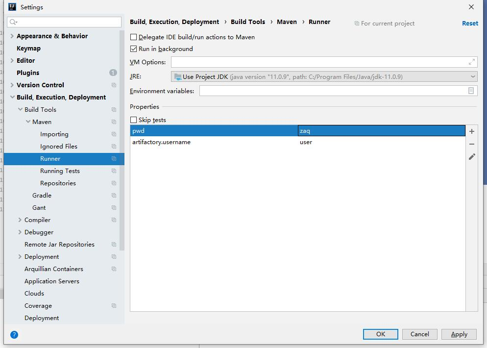

2. 下载依赖
下载依赖需要配置私服地址，有两种配置方式
2.1. 项目配置
项目的 pom.xml 添加下面的私服信息即可
<project>
...
<repositories>
<repository>
<id>local-release</id>
<url>http://maven.baidu.com/artifactory/libs-release-local</url>
<snapshots>
<enabled>false</enabled>
</snapshots>
</repository>
<repository>
<id>local-snapshot</id>
<url>http://maven.baidu.com/artifactory/libs-snapshot-local</url>
<releases>
<enabled>false</enabled>
</releases>
</repository>
</repositories>
...
</project>2.2. 全局配置
在maven的 setting.xml 配置文件中添加如下内容
<settings>
...
<profiles>
<profile>
<id>baidu-repo</id>
<repositories>
<repository>
<id>baidu-release</id>
<name>baidu Release Repo</name>
<url>http://maven.baidu.com/artifactory/libs-release-local</url>
<layout>default</layout>
</repository>
<repository>
<id>baidu-snapshot</id>
<name>baidu Snapshot Repo</name>
<url>http://maven.baidu.com/artifactory/libs-snapshot-local</url>
<layout>default</layout>
</repository>
</repositories>
</profile>
</profiles>
...
</settings>配置说明参考 maven官方站点
3. 上传依赖
使用 maven deploy 可以将项目内部或者公司内部使用的jar包部署到私服供其它开发下载使用，部署前需要配置私服仓库位置及认证信息，配置方式有如下两种，任选其一即可
3.1. distributionManagement配置
在项目的 pom.xml 文件中添加如下内容
<project>
...
<distributionManagement>
<repository>
<id>baidu-release</id>
<url>http://maven.baidu.com/artifactory/libs-release-local</url>
</repository>
<snapshotRepository>
<id>baidu-snapshot</id>
<url>http://maven.baidu.com/artifactory/libs-snapshot-local</url>
</snapshotRepository>
</distributionManagement>
...
</project>在maven的 settings.xml 文件中添加如下内容，id必须与distributionManagement配置中repository的id，username和password为私服认证的用户名密码
<settings>
...
<servers>
<server>
<id>baidu-release</id>
<username>user</username>
<password>pwd</password>
</server>
<server>
<id>baidu-snapshot</id>
<username>user</username>
<password>pwd</password>
</server>
</servers>
...
</settings>更多内容参考 Artifactory官方说明
3.2. Artifactory插件配置
在项目的 pom.xml 添加如下内容
<project>
...
<build>
<plugins>
<plugin>
<groupId>org.jfrog.buildinfo</groupId>
<artifactId>artifactory-maven-plugin</artifactId>
<version>3.2.3</version>
<executions>
<execution>
<id>build-info</id>
<goals>
<goal>publish</goal>
</goals>
<configuration>
<publisher>
<contextUrl>http://maven.baidu.com/artifactory</contextUrl>
<username>{{artifactory.username}}</username>
<password>{{artifactory.password}}</password>
<repoKey>libs-release-local</repoKey>
<snapshotRepoKey>libs-snapshot-local</snapshotRepoKey>
<excludePatterns>*-docs-*</excludePatterns>
</publisher>
</configuration>
</execution>
</executions>
</plugin>
</plugins>
</build>
...
</project>上述配置中的 artifactory.username 和 artifactory.password 代表私服认证的用户名密码，为了安全此处使用属性名的表示法，实际用户名密码的值需要在maven中进行配置，Intellij IDEA的配置方法如下

更多内容参考 插件官方说明
3.3. 命名规范
为了更好地组织私服中的构件(jar包)，上传到私服的依赖必须遵循如下命名规范
-
最基础的构件groupId固定为com.baidu，artifactId按照构件功能命名，例如baidu-utils、baidu-security
-
代表特定功能或者特定项目内使用的构件groupId使用com.baidu加功能名称或者项目名称，例如com.baidu.json是json组件的groupId，artifactId根据构件功能命名，连接组件就包含baidu-json-sdk、baidu-json-core等多个构件
-
特定功能的组件如果封装为Spring Boot Starter，包名以cn.baidu开头，这么做是为避免被项目的@ComponentScan扫描到，其它规范参考 Creating Your Own Auto-configuration